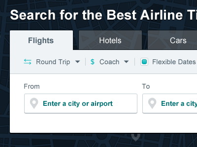
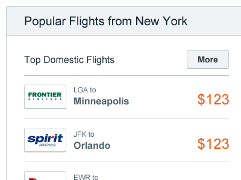

Project Goals
This complete redesign aimed to dramatically rethink the online travel agency's search experience and strongly differentiate it from CheapOair. Along with this, the redesign needed to increase the number of searches performed for all devices, drive adoption of our mobile app, and increase overall conversion.
Learning from Others
Over the years, countless A/B tests had been performed on CheapOair's homepage to optimize conversion, however OneTravel lagged behind. Using the learnings from these tests, combined with competitive analysis and analytics data, helped guide the direction of this redesign.
More than a Facelift
Inspired by the minimalism of modern travel booking sites, a single-line search widget approach was used to streamline the input process. Since the site's main focus is flights, the widget was reduced to simply flight search, allowing tabs to represent types of flights.
This design incorporated a lot of prior research. For example, thee arrow connecting the promotional code to the call-to-action was proven to increase conversion in previous A/B testing. Leveraging analytics data, rarely used inputs were consolidated into a hidden "advanced options" container.
Iterating on the Concept
From there, the design was refined based on internal feedback from key stakeholders. Other verticals were added back in, recent searches were more visually prominent, and newsletter sign up was returned to prime real estate.
Everyone Sits First Class
Though flight search remained the focus of the search, other verticals needed similar prominence. Though most customers were coming to the site looking for flights, it's the cross-sells that are profitable. Adding them above the fold would allow users to immediately know we sell all these product, even though they are likely to book their flights first.
Using a standardized design, the interface gave a cleaner and more consistent feel.
The Nitty Gritty
Here's a quick rundown of the details that shaped this interface
-
Bold Calls-to-Action
The search widget's call-to-action could not scream louder. With prominent color, logical placement, emphatic sizing and guiding arrow—it's perfectly clear what the user needs to do here.
-

Tabbed Search Widget
The design still had a clear focus on flights, but enabled users to tab through the other verticals with a simple, standardized design for each product.
-

Deals Relevant to You
Using geolocation, the home page's random smattering of flight deals is now instead refined to be relevant to the visitor's current location.
-
Mobile App Promotion
OneTravel's mobile app is very good. Here it was given ridiculously prominent real estate so that visitors can see it in all its glory.
From Concept to Production
At this point, the project was handed off to my team for implementation. We worked together to tweak and iterate on the design until it became something worth challenging the existing design. This design was then A/B tested versus the existing design
The Results
Initial A/B test results showed a dramatic improvement in number of searches and substantial gains in conversion across all devices. Users stated that the modern and clean look conveyed a sense of trustworthiness. After a quick run, this design was made the default.
What I Learned
Before starting a redesign project, it's crucial to take stock of existing research to push things forward. By leveraging the company's prior knowledge, I was able to design a much more successful and effective interface that achieved its intended goals.